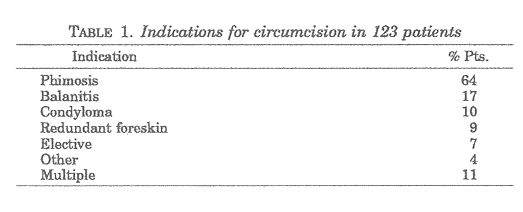
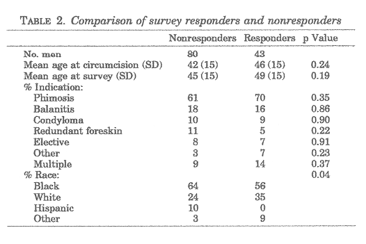
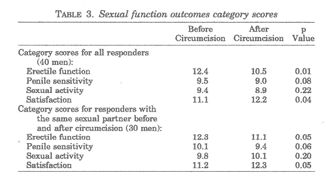

THE CIRCUMCISION REFERENCE LIBRARY
From the Robert Wood Johnson Clinical
Scholars Program and Division of Urology, School of
Medicine, and the Department of Health
Behavior and Health Education, School of
Public Health, University of North Carolina at Chapel
Hill, Chapel Hill, North Carolina
ABSTRACT
Purpose: Evidence concerning the effect of circumcision on sexual function is lacking. Men circumcised as adults are potentially in a unique position to comment on the effect of a prepuce on sexual intercourse. We examine sexual function outcomes in men who have experienced sexual intercourse in the uncircumcised and circumcised states.
Materials and Methods: Men 18 years old or older when circumcised were identified by billing records during a 5-year period at an academic medical center. Medical charts were reviewed for confirmation of the procedure and to identify the indication(s). These men were surveyed to assess erectile function, penile sensitivity, sexual activity and overall satisfaction. Data were analyzed using paired t tests to compare category scores before and after circumcision.
Results: A total of 123 men were circumcised as adults. Indications for circumcision included phimosis in 64% of cases, balanitis in 17%, condyloma in 10%, redundant foreskin in 9% and elective in 7%. The response rate was 44% among potential responders. Mean age of responders was 42 years at circumcision and 46 years at survey. Adult circumcision appears to result in worsened erectile function (p = 0.01), decreased penile sensitivity (p = 0.08), no change in sexual activity (p = 0.22) and improved satisfaction (p = 0.04). Of the men 50% reported benefits and 38% reported harm. Overall, 62% of men were satisfied with having been circumcised.
Conclusions: Our findings may help urologists better counsel men undergoing circumcision as adults. Prospective studies are needed to better understand the relationship between circumcision and sexual function.
KEY WORDS: circumcision, adult, sex
Scientific information that physicians can use as a basis for recommending or not recommending circumcision in neonates or adults is limited. Controversy surrounding neonatal circumcision continues to exist. Neither the American Academy of Pediatrics, American Academy of Family Physicians nor American Urological Association has a specific recommendation endorsing or opposing circumcision.1-3 However, these organizations do have policy statements on circumcision recommending the unbiased discussion of the evidence regarding this procedure. The evidence concerning the effect of circumcision on sexual function is lacking.
Beliefs differ on how circumcision affects the sensitivity of the glans and pleasure with sexual intercourse. Some believe that circumcision results in diminished sensitivity of the glans,1, 4 whereas others believe that it results in more pleasurable sexual intercourse.5-7 A study by Pienkos, a military surgeon who surveyed men requesting circumcision during the Korean War, revealed that men requested circumcision with the expectation of improved sexual satisfaction.8 The sensitivity of the glans and pleasure with sexual intercourse as dependent on the presence of foreskin have received little formal investigation. Masters and Johnson performed neurological testing on the glans of circumcised and uncircumcised men finding no significant difference in sensation.5 To our knowledge no study in this regard has been conducted on men undergoing circumcisions as adults.
Men who have undergone circumcision as adults are potentially in a unique position to comment on the effect of a prepuce on sexual intercourse. We examine erectile function, penile sensitivity, sexual activity and overall satisfaction in men who have experienced sexual intercourse in the uncircumcised and circumcised states.
Participants. We identified men who were circumcised at age 18 years or older by reviewing billing records at the University of North Carolina at Chapel Hill Medical Center between January 1, 1995 and December 31, 1999 for Current Procedural Terminology code 54161. Medical charts were reviewed to confirm that the procedure had been done and to determine the indications. We then developed a survey in-strument to gather additional information. The institutional review board at the University of North Carolina at Chapel Hill approved this study.
Survey instrument. We investigated the effect of circumcision on erectile function, penile sensitivity, sexual activity and overall satisfaction. Existing indexes, scales and questionnaires were reviewed for ability to evaluate these categories. Although certain individual questions were applicable, no instrument had been specifically designed to evaluate these sexual function outcomes. Items from the International Index of Erectile Function, Changes in Sexual Functioning Questionnaire, Brief Sexual Function Questionnaire, Center for Marital and Sexual Health Functioning Questionnaire, and National Health and Social Life Survey were included or adapted.9-13
The survey contained questions to obtain demographic information (age, race), co-morbidities (depression, diabetes, heart disease) and basic sexual histories (sexual orientation, sexual activity before and after circumcision). To evaluate sexual function outcomes we used Likert scales ranging from 1 to 5 to measure strength of agreement/disagreement with statements and to quantify the frequency of specific sexual practices. We asked responses for before and after circumcision. We also included open ended questions to gather descriptive information about perceived benefits and harms, and any general comments.
Discussions were held with men who had undergone adult circumcision to identify issues important to them. Their input helped us decide what types of questions to include in the survey. Once designed, the survey was pretested and modifications were made. The anonymous surveys were coded to allow tracking. Addresses were obtained from billing information. After the first mailing 3 successive mailings were sent to nonresponders.
Statistical analysis. We compared responders to nonresponders by age at circumcision and age at survey using paired t tests. We used chi-square goodness of fit analysis to compare indication and Pearson's chi-square test for race. We then limited further analysis to heterosexual men to enhance internal validity of the study. We analyzed all heterosexual responders together to find the overall effect of circumcision on all men, and we also analyzed the subgroup of men who had sex with the same partner before and after circumcision to control for different sexual experiences with different partners.
For individual items on the survey we performed paired t tests on the Likert scores before and after circumcision. The Likert scores for 3 items were combined to yield each of the 4 category scores of sexual function outcomes, such that all categories had a potential maximum score of 15. The survey items used to calculate each category score are shown in the Appendix. Sample size was not sufficiently large to perform factor analyses. Items were grouped into a priori categories based on similarity of content. Higher scores for all of the categories represent increases, and so for some items the Likert scale scoring was reversed. Therefore, all responders had 4 category scores for sexual function before and 4 scores for after circumcision. We used paired t tests to compare each category score before and after circumcision.
We adjusted for age by performing linear regression in which the outcome was the category score after circumcision, the main exposure was the category score before circumcision, and the potential covariable was the difference between the age at survey and age at circumcision. The age at survey differed from the age at circumcision by the time elapsed since the procedure. Since men served as their own controls, we were able to adjust for age by using change in age. We compared the prevalence of co-morbidities before and after circumcision using McNemar's chi-square test, and since they did not differ significantly, we did not otherwise adjust for them. All statistical analyses were performed using Stata 6.0 (Stata Corporation 1999, College Station, Texas).
From billing records 133 patients were identified as having had adult circumcisions and 123 of these procedures were confirmed on chart review. The indications for the procedures are shown in table 1. Phimosis was the most common indication, 9 men (7%) underwent an elective procedure and 1 man was circumcised for penile cancer. Of the 123 surveys initially mailed 5 were returned by family members indicating that the patient was dead. Another 20 surveys were returned by the postal service because the address was incorrect and no forwarding information existed. A total of 43 completed surveys were returned for a response rate of 44% for potential responders and a rate of 35% for all patients having undergone adult circumcision.

The responders were representative of nonresponders by age at circumcision, age at survey and indication, but not by race (table 2). No Hispanic men responded. Of the responders 40 (93%) identified themselves as heterosexual and no men reported that they were bisexual. Of all responders 90% had had sex before the procedure, 86% had sex after the procedure, and 79% had sex before and after the circumcision, including 72% had sex before and after with the same partner. Those who had sex after circumcision waited an average of 9 weeks.
Compared to before circumcision, men reported reduced erectile function, decreased penile sensitivity, no change in sexual activity and improved satisfaction after circumcision (table 3). We found essentially the same trends, although the magnitude differed, among the subgroup of men who had sex with the same partner before and after circumcision except that these men experienced increased sexual activity.
The reduction in erectile function was statistically significant. Some men were unable to have erection after the procedure but even those who were able to have sex with the same partner before and after the procedure reported worsened erectile function. This difference remained significant when adjusted for age and co-morbidities. Some comments were: "Erections are shorter time now." "Penis smaller. Now have erectile dysfunction."
The reported decrease in penile sensitivity that resulted from circumcision bordered on statistical significance. Men who had sex with the same partner before and after circumcision reported greater reduction in penile sensitivity than other men. How men viewed the decreased penile sensitivity differed: "Somewhat less sensitivity helps prolong intercourse." " I had been warned that I would lose sensitivity, but overall, I feel that I was not completely informed."
The all responders group reported worsened erectile function and decreased penile sensation, as well as decrease in sexual activity that was not statistically significant. However, men in the same partner group actually reported increased sexual activity but this too was not statistically significant. The comments were mixed: "No sex drive." "Sex is a lot better."

A higher satisfaction score represented a more pleasing appearance of the penis and less pain. After circumcision there was a statistically significant improvement in how men thought the penis looked to them and to their partners, and a reduction in pain experienced with erection. "It don't hurt to have intercourse or get an erection." "More pleasing to look at." "I feel like I have a penis that I'm proud of now." After circumcision men were more likely to have their partners start sexual activity with them, more likely to receive oral sex, and as likely to perform anal sex, try different sexual positions and masturbate, but none of these changes was statistically significant. The subgroup of men who had sex with the same partner before and after circumcision were more likely to have their partners start sexual activity with them (p = 0.05), more likely to receive oral sex (p = 0.08) as likely to perform anal sex and masturbate, and more likely to try different sexual positions (p = 0.33).

Of the responders 47% reported that sex was physically more pleasurable and 47% also said that their sex lives were more satisfying after circumcision. Additional comments included improved penis cleanliness and easier voiding after circumcision. When asked generally about benefits and harms, 50% reported a perceived benefit or improvement, and 38% reported a perceived problem or difficulty as a result of the procedure. Overall, 62% of men were satisfied with having been circumcised.
Although many have speculated about the effect of a foreskin on sexual function, the current state of knowledge is based on anecdote rather than scientific evidence. Myths have mostly addressed changes in penile sensitivity but some have also regarded sexual activity and satisfaction with appearance. Little has been written about the effect of circumcision on erectile function. Few studies have investigated the relationship between male circumcision and sexual function.14
Pleasure with sexual activity could mean enjoyment of the shared sexual act and being a good sexual partner, or it could reflect a pleasing sensation from physical stimulation. Many believe that circumcision reduces penile sensitivity1, 4 but some believe that it prolongs intercourse 7 and provides greater pleasure during sexual intercourse.5-7 Theories to explain the decreased sensitivity are that the epithelium of a circumcised glans becomes cornified 3 and sensory nerve receptors in the glans become desensitized from constant stimulation.15 Taylor et al offer a histologically based theory on how the prepuce enhances sensitivity through it's "ridged band."16 Masters and Johnson performed exteroceptive and light tactile discrimination on the ventral and dorsal surfaces of the penis, with particular attention to the glans, of circumcised and uncircumcised men finding no clinically significant difference.5 We found a statistically significant decrease in penile sensation following circumcision in men but our respondents had mixed feelings. Some responders appeared to be better able to satisfy their partners after circumcision but some men were not satisfied with the decreased sensation of physical stimulation. It seems that sexual pleasure means different things to different men and should be more specifically defined in future studies.
Although 1 myth concerning the appearance of the penis is that the uncovered glans is more aesthetically pleasing,17 some parents decide to have the newborns circumcised because they believe it will make him look better.18 In a survey of college women 87% expressed preference for pictures of circumcised over uncircumcised penises.19 We found that the men in our study and their partners were more likely to think that the penis looked good after circumcision.
Laumann et al analyzed data from the National Health and Social Life Survey and found that circumcised men were slightly less likely to experience sexual dysfunction and were somewhat more likely to engage in more elaborate sexual practices, such as oral sex, anal sex and masturbation than uncircumcised men.20 We found that circumcised men were instead more likely to have erectile dysfunction. Our study populations differ in that we evaluated men circumcised as adults but the worsened erectile function remained when adjusted for age and the presence of diabetes, depression and cardiovascular disease. A few men reported concern that the penis was smaller after circumcision. Perhaps circumcision in some men is psychologically traumatic and interferes with erectile function. Like Laumann et al, we found increased frequency of oral sex in men after circumcision but we found no change in the frequency of anal sex or masturbation.
Because this study was cross-sectional rather than prospective, it is limited by recall bias. However, the directionality of that bias is unclear. Since we did not assess men's expectations before they were circumcised, we are unable to comment on how their expectations might have affected their biases. Another limitation is that men may have been recalling sexual experiences before circumcision when suffering from the medical problem that was the indication for the procedure. However, if circumcision was supposed to correct the problem then we would have expected entirely favorable outcomes. Instead we found worsened erectile function and decreased penile sensitivity.
Our small sample size reduces the power of the study and, therefore, the ability to detect small but significant changes and, although responders to the survey appear similar to nonresponders, generalizeability may be limited. Our analysis of only responders and of men who underwent circumcision rather than alternative treatments creates potential for selection bias. This study is patient oriented and analyzes subjective reports. Objective data, such as duplex Doppler ultrasound and penile biothesiometry, are needed to assess erectile function and penile sensation before definitive conclusions can be made. Since we studied circumcision in adults, our findings may not be generalizeable to neonatal circumcision. Our survey instrument was not formally tested for reliability or validity.
To our knowledge we present the first study to evaluate specifically men who experienced sexual intercourse in the uncircumcised and circumcised states. Although our study has some methodological limitations, it contributes to our knowledge about the effect and outcomes of adult circumcision. We found that adult circumcision appears to result in worsened erectile function, decreased penile sensitivity and improved satisfaction. Overall, the majority of men were satisfied that they had undergone circumcision which suggests that in this population factors in addition to sexual function affect satisfaction. Our findings may help urologists better counsel men about adult circumcision. Prospective studies, including those with objective measurements, are needed to better understand the relationship between circumcision and sexual function.
David Collins provided administrative assistance with this project.
APPENDIX: ITEMS INCLUDED IN THE SEXUAL
FUNCTION
OUTCOMES CATEGORIES
Erectile Function
I am able to get an erection.
My erection is firm enough for penetration.
I am able to maintain an erection during sex.
Penile Sensitivity
It takes me longer than I like to have an orgasm.*
My penis is not sensitive enough.*
I have premature ejaculations.
Sexual Activity
I think about having sex.
I start sexual activity with my partner.
I have vaginal sex.
Satisfaction
I have pain in my penis with erection.*
I think my penis looks good to me.
I think my penis looks good to my partner.
* Likert scale scoring was
reversed.
REFERENCES
1. American Academy of Pediatrics: Circumcision policy statement. Pediatrics, 103: 686, 1999
2. American Academy of Family Physicians policy statement on circumcision. http://www.aafp.org/policy/camp/4.html. Accessed June 11, 2001
3. American Urological Association: Circumcision policy statement. http://www.auanet.org/aboutaua/policy_statements/services.cfm#circumcision. Accessed June 11, 2001
4. Learman, L. A.: Neonatal circumcision: a dispassionate analysis. Clin Obstet Gynecol, 42: 849, 1999
5. Masters, W. H. and Johnson, V. E.: Human Sexual Response. Boston: Little, Brown & Co., p. 189, 1966
6. Diddle, A. W.: Should circumcision be done routinely? Med Aspects Hum Sexual, 1: 32, 1967
7. Preston, E. N.: Whither the foreskin: a consideration of routine neonatal circumcision. JAMA, 213: 1853, 1970
8. Pienkos, E. J.: Circumcision at the 121st evacuation hospital: report of a questionnaire with cross-cultural differences. Military Med, 154: 169, 1989
9. Rosen, R. C., Riley, A., Wagner, G. et al: An international index of erectile function (IIEF): a multidimensional scale for assessment of erectile dysfunction. Urology, 49: 822, 1997
10. Clayton, A. H., McGarvey, E. L. and Clavet, G. J.: The changes in sexual functioning questionnaire (CSFQ): development, reliability, and validity. Psychopharmacol Bull, 33: 731, 1997
11. Reynolds, C. F., Frank, E., Thase, M. E. et al: Assessment of sexual function in depressed, impotent, and healthy men: factor analysis of a brief sexual function questionnaire for men. Psychiatry Res, 24: 231, 1988
12. Glick, H. A., McCarron, T. J., Althof, S. E. et al: Construction of scales for the Center for Marital and Sexual Health (CMASH) Sexual Functioning Questionnaire. J Sex Marital Ther, 23: 103, 1997
13. Laumann, E. O., Gagnon, J. H., Michael, R. T. et al: The Social Organization of Sexuality. Sexual Practices in the United States. Chicago: University of Chicago Press, p. 626, 1994
14. Moses, S., Bailey, R. C. and Ronald, A. R.: Male circumcision: assessment of health benefits and risks. Sex Transm Infect, 74: 368, 1998
15. Morgan, W. K.: Penile plunder. Med J Aust, 1: 1102, 1967
16. Taylor, J. R., Lockwood, A. P. and Taylor, A. J.: The prepuce: specialized mucosa of the penis and its loss to circumcision. Br J Urol, 77: 291, 1996
17. Wallerstein, E.: Circumcision: the uniquely American medical enigma. Urol Clin North Am, 12: 123, 1985
18. Brown, M. S. and Brown, C. A.: Circumcision decision: prominence of social concerns. Pediatrics, 80: 215, 1987
19. Williamson, M. L. and Williamson, P. S.: Women's preferences for penile circumcision in sexual partners. J Sex Educ Ther, 14: 8, 1988
20. Laumann, E. O., Masi, C. M. and Zuckermen, E. W.: Circumcision in the United States. JAMA, 277: 1052, 1997
http://www.cirp.org/library/sex_function/fink1/